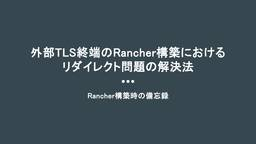
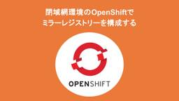
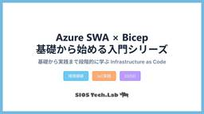
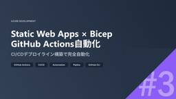
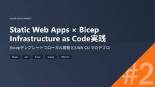
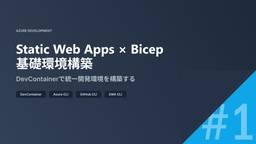

SIOS Tech. Lab
https://tech-lab.sios.jp
サイオステクノロジーのエンジニアが クラウド、OSS、認証に関する様々な情報を提供します。
フィード
opensslコマンドでパスワードハッシュを出力する
SIOS Tech. Lab
こんにちは、伊藤です。 パスワードハッシュを使用したシステムを開発する際、プログラムが生成したパスワードハッシュが正しいかどうかテストすることがあります。この記事では、そのような場面で役立つopensslコマンドを使い、 ...opensslコマンドでパスワードハッシュを出力する first appeared on SIOS Tech. Lab.
3日前

外部TLS終端のRancher構築におけるリダイレクト問題の解決法
SIOS Tech. Lab
はじめに こんにちはサイオステクノロジーの小野です。今回はRancherを構築後にWebUIにアクセスしたらリダイレクトが繰り返されるエラーが発生して解決に時間がかかったので、その解決方法を共有します。 今回の構成 前提 ...外部TLS終端のRancher構築におけるリダイレクト問題の解決法 first appeared on SIOS Tech. Lab.
4日前

閉域網環境のOpenShiftでミラーレジストリーを構成する
SIOS Tech. Lab
概要 こんにちは。サイオステクノロジーの塙です。 今回は、閉域網環境のOpenShift(以下、OCP)で、ミラーレジストリーの構成について説明したいと思います。 OpenShiftの詳細については、本ブログでは省略して ...閉域網環境のOpenShiftでミラーレジストリーを構成する first appeared on SIOS Tech. Lab.
4日前

Infrastructure as Code実践：Azure SWA×Bicep×GitHub Actions
SIOS Tech. Lab
ご挨拶 ども！3日で3本もブログを執筆するという狂ったことをやってしまいました。ちょっとやりすぎちゃったなと感じている龍ちゃんです。シリーズだったので、投稿するという達成感が得られない中、よく書いたなと思います。 勉強も ...Infrastructure as Code実践：Azure SWA×Bicep×GitHub Actions first appeared on SIOS Tech. Lab.
4日前

GitHub Actions自動化実践：Azure SWA×Bicep CI/CDパイプライン構築
SIOS Tech. Lab
ご挨拶 ども！最近はClaudeのトークン数の消費が多くてちょいちょい制限にかかって、GitHub CopilotとGeminiも巡回ルートに入った龍ちゃんです。AIサービスにぶん投げている時間で、別の作業ができるっての ...GitHub Actions自動化実践：Azure SWA×Bicep CI/CDパイプライン構築 first appeared on SIOS Tech. Lab.
4日前

作業時間を70%短縮！BicepによるAzure Static Web Apps自動構築
SIOS Tech. Lab
ご挨拶 ども！新しいことを学ぶのにAIを使うようになって勉強がはかどっている龍ちゃんです。検証したことはジャンジャンブログ化していきます。旅館にこもって執筆だけをしている時間がそのうち来るかもしれません。ネット回線がない ...作業時間を70%短縮！BicepによるAzure Static Web Apps自動構築 first appeared on SIOS Tech. Lab.
4日前

DevContainer実践入門：Azure CLI+GitHub CLI環境をチーム全体で統一
SIOS Tech. Lab
ご挨拶 ども！寝る前の日課にAIとのチャットが追加された龍ちゃんです。たまにブログの解析もさせるんですけど、この一番最初の挨拶はAI的には関西弁という認識になるんです。個人的にはそんな意図がなくて、ヒヤッとしているんです ...DevContainer実践入門：Azure CLI+GitHub CLI環境をチーム全体で統一 first appeared on SIOS Tech. Lab.
4日前

知っておくとちょっと便利！cron によるタスク管理2
SIOS Tech. Lab
今号では、cron でタスクを追加する際の tips、スクリプト形式のタスクの内容を、もう少し深堀りして説明します！ crontab 設定の tips 時間指定方法 範囲指定する – (ハイフン) を指定する ...知っておくとちょっと便利！cron によるタスク管理2 first appeared on SIOS Tech. Lab.
5日前

【2025年6月】OSSサポートエンジニアが気になった！OSS最新ニュース
SIOS Tech. Lab
こんにちは！ 今月も「OSSのサポートエンジニアが気になった！OSSの最新ニュース」をお届けします。 Apple は、MacOS 上で仮想マシンを使って Linux コンテナを作成・実行するためのツール「containe ...【2025年6月】OSSサポートエンジニアが気になった！OSS最新ニュース first appeared on SIOS Tech. Lab.
5日前

RHEL 10 同梱版の httpd 変更点まとめ 1 ~ドキュメント編
SIOS Tech. Lab
OSS よろずチームの神﨑です。RHEL 10 同梱版の httpd の変更点についてドキュメントと疎通確認したのでまとめていきたいと思います。まずは、ドキュメントからです。 httpd に関する変更点 RHEL 公式ド ...RHEL 10 同梱版の httpd 変更点まとめ 1 ~ドキュメント編 first appeared on SIOS Tech. Lab.
12日前